5 Bataklık Kuşları
Toy
Otis tarda, Great Bustard
Lokal olarak çok az sayıda olan yerli bir türdür.
İç Anadolu ve Doğu Anadolu’da lokal olarak çok az sayıda bulunur. Bilinen üreme alanları, geniş ve ağaçsız araziler, tarımsal mozaik alanlar ve yarı bozkır bölgeler olup insan baskısının düşük olduğu ve 1800 metre yükseklikteki doğu bölgelerinde görülür. Bugün popülasyonu 10’dan az alanda bulunmakta olup bu alanlar arasında devlet üretme çiftlikleri önemli popülasyonu barındırmaktadır. Tarımsal yayılma, avcılık, habitat kaybı ve değişimi nedeniyle popülasyonun uzun vadede azaldığı gözlenmektedir. Mevcut gidişat devam ederse soyunun tükenme tehlikesi yüksek bir olasılıktır.
Türkiye’deki eski yayılışını detaylandıran bir çalışmaya göre, geçmişte tüm bölgelerde bulunmaktaydı (Kasparek, 1989), bu çalışmada tür için toplam 83 alan tanımlanmıştır. 1980’lerin başında, türün varlığını sürdürebilmesinin zor olacağı tahmin edilmiştir (Goriup & Parr, 1985). Sonraki veriler (Eken & Magnin, 1999; Heunks et al., 2001, 2002), Türkiye’deki toy sayısında son 20-30 yılda ciddi bir azalma yaşandığını göstermektedir. 2000’li yıllarda popülasyonunun 764-1250 birey arasında olduğu tahmin edilmiştir (DD ve DKMP, 2004). Murat Nehri Vadisi ve Bulanık civarında, 2002 ilkbaharında 145 birey sayılmıştır. Doğu Anadolu popülasyonunun belkemiğini oluşturan Bulanık ve Muş Ovası’nda toplam 251 bireyin olduğu tespit edilmiştir (Balmer & Kirwan, 2003). Güneydoğu Anadolu’da ürediği yüksek bir olasılık olarak değerlendirilse de, 2004 yılında bölgede yapılan kapsamlı arazi çalışması sonucunda bölgede artık üremediği ortaya çıkmıştır (Kirwan et al., 2003; Welch, 2004; Karakaş & Kılıç, 2005). 1997’ye yakın tarihlerde popülasyonun 800-3000 çift arasında olduğu tahmin edilmiştir. 1980’lerin başında Güneydoğu Anadolu’nun sınır bölgelerinde dikkate değer sayılarda kışladığı bilinmektedir (Goriup & Parr, 1985).
Ülkedeki popülasyonun çoğunluğu yerli bireylerden oluşsa da az sayıda göç almaktadır. Güneydoğu Anadolu’da kışlayan bireylerin ise Karadeniz’in kuzeyinden geldiği düşünülmektedir. Ege, Marmara ve güney kıyı şeridinde sonbahardan ilkbahara kadar daha geniş bir alanda kaydedilmiştir.
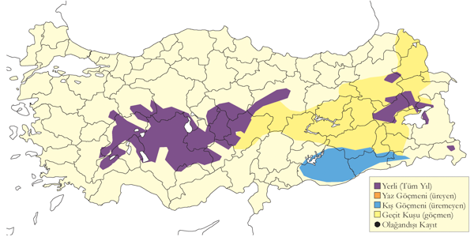
Üreme
Yuvalama alanı: Genellikle geniş, açık ve ağaçsız alanlar, büyük tarım alanları, nadasa bırakılmış tarlalar ve çayırlarda yuvalar. Sivrihisar’ın güneybatısındaki Aliken’de 45 erişkinin bulunduğu önemli bir arazinin %50’si buğday ve arpa tarlalarından, %40’ı nadas alanlarından ve %10’u taşlık bozkırdan oluşmaktadır. Kütahya civarındaki Altıntaş Ovası’nda, tahıl arazilerinin neredeyse yarısı her yıl nadasa bırakılmakta olup burada türün her yıl ürediği teyit edilmektedir (Magnin & Yarar, 1997).
Yuvası: Derin olmayan, çevrelenmemiş bir çukur şeklindedir ve genellikle kısa, seyrek bitki örtüsü içinde ya da gelişen mısır veya otlar arasında bulunur. Türkiye’de yuva yapısına dair ayrıntılı bilgi bulunmamakla birlikte, diğer bölgelerde sade bir yapıdadır.
Yumurta sayısı: Türkiye’de gözlenen yumurta sayısı tanımlanmamıştır; başka bölgelerde genellikle 2-3 (nadiren 4) yumurta ile kuluçkaya yatar.
Üreme dönemi: Nisan ortasından ağustos ortasına kadar sürer. AKD. 9-11 Mayıs 1899’da Acıgöl yakınlarında kalmıştır (Selous, 1900). Bu sürede yuva bulamamış fakat taze bir yumurta kendisine getirilmiştir ve o bölgede kuvvetle muhtemel hala küçük bir popülasyon bulunmaktadır (Magnin & Yarar, 1997). İÇA. Tuz Gölü’nün doğu kıyısında 15 Nisan 1995’de erkeklerin ağaçsız tahıl tarlaları ve doğal bozkırlarda 2-6 bireylik gruplar veya tek olarak kur yaptığı belirlenmiştir; çiftleşme yalnızca bir kez gözlenmiştir (Heunks et al., 2002). Kayseri ile Çorum arasında 8-14 Mayıs 1876’da yapılan bir yolculukta “talan edilmiş bir toy yuvası” gözlemlenmiştir (Danford, 1877-78). 1972 ilkbaharında Tuz Gölü’ndeki bir adada martı kolonisinde bir toy yumurtası bulunmuştur. 27 Haziran 1951’de Çubuk Ovası’nda bir yavruyla dişi, 25 Nisan 1965’te Ereğli’de ve Mayıs 1969’da Tuz Gölü’nde kur davranışı gözlenmiştir (Kasparek, 1989). Tuz Gölü’nün doğu kıyısında 15 Nisan 1995’te kur davranışı kaydedilmiştir. GDA 14 Mayıs 1975’te Viranşehir’in batısında yanında yavrusu varmış gibi davranan bir dişi ve 14 Haziran 1983’te Batman yakınlarındaki Çöltepe’de orta boylu bir yavru ile dişi gözlenmiştir. DOA. 30 Mayıs 1992’de Bulanık’ta, içinde 6 kur yapan erkek ve bir genç dişi bulunan yaklaşık 30 bireylik bir grup gözlenmiştir. 7 Haziran 1987’de Hazar Gölü’nde Sivrice civarında bir yavru ve Van Gölü yakınlarında yavrusu varmış gibi davranan bir dişi kaydedilmiştir (Kasparek, 1989). Sodalı Göl’ün doğusunda üreme sezonunda 32’den fazla birey gözlenmiş ve burada ürediği teyit edilmiştir (Magnin & Yarar, 1997).
Alttürler ve Sınıflandırma
Türkiye’de nominat alttürü bulunur.
Asya Yakalı Toyu
Chlamydotis macqueenii, Macqueen’s Bustard
Rastlantısal konuktuk. Üreyen nüfusu geçen yüzyılda tükenmiştir.
Yaklaşık 100 yıl aradan sonra tekrar görülmüştür. İlk kayıt, 17 Aralık 2012’de Konya’nın Karapınar ilçesinde avcılar tarafından yaralı halde bulunan bir bireye aittir. Selçuk Üniversitesi Veterinerlik Fakültesi’ne getirilen bu kuş Dr. K. Erciyas’ın danışmanlığıyla tanımlanmıştır. 28 günlük tedavi ve rehabilitasyon sürecinin ardından 14 Ocak’ta Dr. Ortaç Onmuş tarafından sırtına verici takılarak doğaya bırakılmıştır. Serbest bırakıldığında birkaç metre uçabilmiş, ardından koşarak uzaklaşmıştır; ancak ertesi gün bir çakal tarafından ölü olarak bulunmuştur. Yaralanmasının göğsüne isabet eden bir avcı saçmasından kaynaklandığı ve göğüs kasındaki kurşunun tedavi sırasında çıkarılamadığı anlaşılmıştır. Kuşun bulunduğu alanda bağırtlak ve toy sürülerinin kışladığını öğrenilmiştir.
İkinci kayıt, 20 Ekim 2020’de Trabzon’un Akçaabat ilçesinde bitkin halde bulunan, halkalı ve sırtında verici taşıyan bir bireye aittir. Sokakta göç yorgunu olarak bulunan bu bireyin bakımı kuş fotoğrafçısı Hakan Kahraman tarafından yapılmış, rehabilitasyonu tamamlanmıştır. 28 Ekim 2020’de Bayburt’un Balkaynak Köyü’nde doğaya salınan kuş, iki gün sonra Yozgat’ın Sorgun ilçesine bağlı Osmaniye Köyü kırsalında avcılar tarafından vurularak ölü bulunmuştur (NTV Haberler, 2020).
Üçüncü kayıt, 2020 Aralık ayında Bitlis’te yaralı halde bulunan bir bireyedir. Bu birey, tedavi için Van Yüzüncü Yıl Üniversitesi’ne getirildiğinde 550 gram ağırlığındaydı. Rehabilitasyon süreci sonunda ağırlığı yaklaşık 1,5 kilograma ulaşmıştır. Sağlığına kavuşan kuş, 17 Mart 2021’de Muş Ovası’nda TİGEM sahasında doğaya salınmış ve kuş fotoğrafçıları tarafından belgelenmiştir.
Eski üreyen popülasyona ait kayıtlar, 1912 yılı veya daha öncesinde Kars civarından gelmektedir (Satunin, 1912). Ayrıca 1917 öncesinde Aras Vadisi’nde çok küçük bir popülasyonun bulunduğu belirtilmiştir (Glutz von Blotzheim, Bauer & Bezzel, 1973). 1910 yılında Amik Gölü yakınlarında bulunan genç bir bireyin, Aharoni tarafından muhafaza edilemediği, ancak o dönemde bu bölgede muhtemelen üremenin olduğuna dair bilgiler aktarılmıştır (Kumerloeve, 1963). 1981 yılında yapılan değerlendirmeler, Doğu Anadolu’nun ücra bölgelerde hala hem uygun üreme habitatlarının bulunduğunu, hem de buralarda ara sıra kışlayabileceğini öne sürmüştür (Goriup & Parr, 1985).
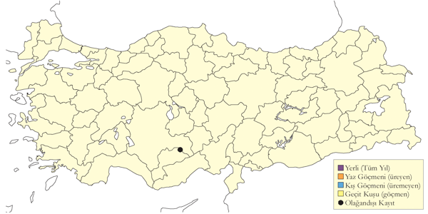
Üreme
Türkiye’de yuvalamaz. Parçalı yayılış gösterir, batıda Sina (Mısır) ve doğuda Arabistan’dan Moğolistan’a kadar uzanır, kuzeyde üreyenler uzun mesafe göçmenidir.
Alttürler ve Sınıflandırma
Monotipik bir türdür. Eskiden yakalı toylar tek bir tür altında Chlamydotis undulata sınıflandırılıyordu. Yapılan moleküler analizler ve kur törenindeki farklara göre Kuzey Afrika’da bulunan undulata ve Orta Asya’da bulunan macqueenii alttürlerinin farklı türler olduğuna karar verilmiştir.
Mezgeldek
Tetrax tetrax, Little Bustard
Çok lokal ve nadir yaz konuğu, nispeten yaygın ancak nadir geçit türü ve kış konuğudur.
İç Anadolu ve Doğu Anadolu’da çok nadir ve lokal olarak bulunur. 1980-2000 yılları arasında soyunun tükenmiş olduğu düşünülmüştür. Ancak uzun bir aradan sonra İç Anadolu’da 1998 yılında iki küçük üreme kolonisi tespit edilmiş (Eken & Magnin, 1999) ve 2003 yılında farklı üç alanda kur davranışı sergileyerek uzun süreli kalma gözlenmiştir. Doğu Anadolu’da ise Muş yakınlarında ve Bulanık Ovası’nda daha güçlü bir popülasyonun var olduğu tespit edilmiştir. Buna karşın, Güneydoğu Anadolu’da yapılan kapsamlı arazi çalışmalarında türün varlığına dair herhangi bir veri elde edilememiştir (Welch, 2004).
Türün tarihsel yayılışı ve durumu (Kasparek, 1989) tarafından karşılaştırmalı olarak gösterilmiştir. Bu çalışmaya göre, türün esas yayılış alanı Marmara’nın güneyindeki bazı bölgeler, kıyı Ege, İç Anadolu’nun çok lokal alanları, Akdeniz, Doğu ve Güneydoğu Anadolu’dur. Urfa Ceylanpınar’da 1960’lara kadar oldukça yaygındı ve son üç bölgedeki kayıtların çoğu üreme dönemi dışındaydı. (Kasparek, 1989) tarafından mezgeldek için yalnızca 40 kadar alan işaret edilmekle birlikte, türün Türkiye’deki durumu ile ilgili literatürün çoğu 1950 öncesine aittir. Toya benzer şekilde, tarımsal uygulamalar, habitat değişimleri ve avcılık nedeniyle popülasyon uzun vadede azalma göstermektedir.
Geç sonbaharda Karadeniz kıyısı boyunca nadir de olsa az sayıda birey göç geçişi yapar. 26 Ekim 2010’da Rize’de, 9 Kasım 2009’da İstanbul’da, 15 Kasım 2009’da Trabzon’da (Balmer & Murdoch, 2010) ve Aralık 2005’te Kızılırmak Deltası’nda kaydedilmiştir. Kış mevsiminde ise az sayıda birey Karadeniz, Marmara, Ege ve Akdeniz kıyılarında görülebilir.
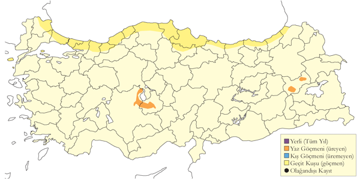
Üreme
Yuvalama alanı: Türkiye’de üreme verisi yoktur; ancak diğer bölgelerde açık çayırlar ve mısır tarlalarında yuvalar.
Yuvası: Derin olmayan, çevrelenmemiş bir çukur şeklinde olup genellikle bitki örtüsü içine gizlenmiştir.
Yumurta sayısı: Normalde 3-4 (nadiren 2-5) yumurta ile kuluçkaya yatar.
Üreme dönemi: AKD Karamık Bataklığı’nda, 12 Temmuz 1969’da bulunan ölü bir bireyin neredeyse tüylenmiş yavru (palaz) olduğu düşünülmektedir. MAR Karacabey-Bursa arasındaki yaklaşık 60 hektarlık bir alanda, Mayıs 1937’de kur yapan 7 erkek vurulmuş ve burada üredikleri teyit edilmiştir (Kasparek, 1989). GDA 8 Nisan 1981’de Ceylanpınar’da kur yapan bir erkek gözlenmiştir (Parr, 1981). İÇA Konya Havzası’nda 23 Haziran 1998’de kur yapan bir erkek gözlenmiştir (Kirwan et al., 2003). Ayrıca, 27 Mart 2004’te Kulu Gölü yakınlarında kur yapan iki erkek ve öten bir erkek ile kaçan bir dişi gözlenmiştir.
Alttürler ve Sınıflandırma
Monotipik bir türdür. Önceden Otis cinsi altında yer almıştır (Collar N.; (Hoyo, Elliott & Sargatal, 1996).
Sukılavuzu
Rallus aquaticus, Water Rail
Yaygın ve çok sayıda bulunan yerli, yarı göçmen ve kış konuğudur.
Ülkenin tamamında, uygun habitatların bulunduğu alanlarda yaygın şekilde ürer. Ilıman iklimli bölgelerde yerli kalırken, karasal bölgelerden kıyısal alanlara göç eder. Üreyen popülasyon, son 15 yıldır tatlısu habitatlarının birer birer kaybolması sonucu muhtemelen azalmaktadır.
Göç döneminde, familyasının diğer üyeleri gibi beklenmedik yerlerde, örneğin şehirlerin içinde veya gemilerde bulunan bireyler, üreme sonrası yeni sulakalanlar arayan bireylerdir.
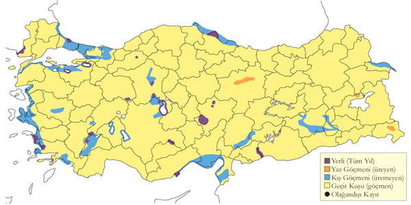
Üreme
Yuvalama alanı: Sazlıklar, bataklıklar, kısmi taşkın alanları ve göl ile gölcüklerin kenarındaki bitki örtüsü içinde yuvalar.
Yuvası: Yapraklar, kamışlar ve su kenarı bitkilerinden yapılmış derin olmayan bir kap şeklindedir. Yoğun bitki örtüsü arasında, alçakta ve su yüzeyine yakın bir konumda bulunur.
Yumurta sayısı: Türkiye’de tespit edilememiştir; diğer bölgelerde ortalama 6-10 (nadiren 5-16) yumurta ile kuluçkaya yatar.
Üreme dönemi: Birden fazla kez kuluçkaya yatabilir ve mart-temmuz arasında öter; Türkiye’de de benzer olduğu tahmin edilmektedir. İÇA İç Anadolu’da Hotamış’ta 25 Mayıs 1993’te derin bir suya yakın dar bir kanaldaki Phragmites (kamış) alanında, içinde bir sağlam ve bir yeni kırılmış yumurta olan bir yuva gözlenmiştir. 25 Haziran 1977’de Eşmekaya’da bir yavrusu olan bir yuva ve 20 Haziran 1977’de uyarı ötüşü yapan erişkinin yanında bir yavru kaydedilmiştir (Schubert, 1979). KAR 20 Mayıs 1992’de Yeniçağa Gölü yakınındaki küçük doğal bir havuzun içinde sık bitki örtüsünde yumurtalı bir yuva ve yakında öten bir erişkin birey kaydedilmiştir. Temmuz 1971’de Kızılırmak Deltası’nda erişkinler ve yavrular gözlenmiş, 28-29 Temmuz 1971’de aynı bölgede 2 yavru yakalanmıştır (Dijksen & Kasparek, 1985). Bu bölgede 1992’de üreyen popülasyonun 500-750 çift arasında olduğu tahmin edilmiştir. Aynı bölgede, 28 Mayıs 1992’de bir erişkin ve yavrusu gözlenmiş olup yumurtlamanın mayıs başında gerçekleştiğini göstermektedir. MAR İznik Gölü’nde 7 Temmuz 1966’da bir erişkin ve 2 yavrusu kaydedilmiştir.
Alttürler ve Sınıflandırma
Türkiye’de nominat alttürü bulunur.
Bıldırcınkılavuzu
Crex crex, Corn Crake
Lokal olarak ve az sayıda yuvalayan bir yaz konuğudur. Göç zamanında yaygın ve nispeten çok sayıda bulunur.
Doğu Karadeniz’de ilk kez Posof’ta ürediği kanıtlanmış olup haziran-temmuz aylarında birkaç öten erkek kaydedilmiştir (Kirwan & Martins, 1994). Son yıllarda Bolu Yeniçağa Gölü’nde yuvaladığı da tespit edilmiştir.
19. yüzyılda İzmir çevresindeki gözlemlerine dayanarak, türün bir geçiş türü olmasının yanı sıra yaz konuğu olduğunu da düşünen (Gonzenbach, 1852), aynı zamanda türün ürediğini de kabul etmektedir (Pasquali, 1991); ancak bu iddiayı destekleyecek bir kayıt bulunmamaktadır.
Diğer yandan, Türkiye genelinde belirgin şekilde yaygın ancak genelde az sayıda görülen bir geçiş türüdür. İlkbahar göçü martta başlar, nisan sonunda zirveye ulaşır ve kuşlar üreme alanlarına nisan ortasından itibaren ulaşır (Cramp & Simmons, 1980). Türkiye’de ilkbahar kayıtları mart-mayıs döneminde olup çoğu nisan sonu ve mayıs başında yoğunlaşır. En erken ilkbahar kaydı 8 Mart’tadır ve sayılar genelde düşüktür, en fazla 3 birey gözlenmiştir. Sonbahar göçü Avrupa’da ağustosta başlar ve kasım ayına kadar devam eder (Cramp & Simmons, 1980). Türkiye’deki sonbahar kayıtlarının tamamı ağustos-ekim dönemindedir ve çoğunlukla eylülde yoğunlaşır. Geç kalan bireyler ekimde üç kez, en geç 22 Ekim’de kaydedilmiştir. Bilinmeyen bir lokalitede bir şubat kaydı da (Kasparek, 1992) tarafından belirtilmiş olup, türün Türkiye’de nadiren kışlayabileceğine işaret etmektedir.
Üreme
Yuvalama alanı: İlk kesin üreme kaydı, 3 Ağustos 1996’da Çam Geçidi yakınlarında, Carex’in baskın olduğu biçilmemiş, 30-40 cm yüksekliğindeki çalı ve çimenler içinde iki siyah hav tüylü yavruyla birlikte bir erişkinin gözlenmesiyle yapılmıştır. Bu çayırlar temmuz sonu/ağustos başında tırpanla biçilmektedir (Green, 1997).
Yuvası: Yuva zeminde bir oyuk şeklinde olup kuru otlarla çevrilidir; yakınında bitkisel materyallerle iyi gizlenmiş bir yapıya sahiptir.
Yumurta sayısı: Genellikle 8-12 yumurta ile kuluçkaya yattığı kabul edilir.
Üreme dönemi: İlk yumurtanın haziranın son 10 gününde bırakıldığı düşünülmektedir. DOA Kars yakınlarında 21-22 Haziran 2005’te görülen bir birey üreme alanında gözlemlenmiştir (Balmer & Betton, 2005a). KAR Abant Gölü’nün kenarındaki alanlarda 31 Mayıs 2004’te duyulan birey muhtemelen üremektedir. 3 Ağustos 1996’da Çam Geçidi yakınlarında bir erişkin ve bıldırcın büyüklüğünde siyah hav tüylü iki yavru gözlenmiştir. 10 Temmuz 2001’de Rize’de iki erişkin yiyecek taşırken gözlenmiş olup, bu durum yumurtlamanın 7 Haziran civarında gerçekleştiğini gösterir (Kirwan et al., 2003). Erişkinler, yavrulara sadece ilk birkaç gün yiyecek taşıdığı için bu kayıt anlamlıdır.
Alttürler ve Sınıflandırma
Monotipik bir türdür.
Benekli Suyelvesi
Porzana porzana, Spotted Crake
Nadir bir yaz konuğu, yaygın ve nispeten çok sayıda bulunan bir geçit kuşudur.
Marmara, İç Anadolu ve Karadeniz bölgelerinde yazın görülür; ancak esas olarak göç döneminde yaygın ve bol olduğu bilinmektedir. Türün gerçek durumunu değerlendirmek zordur. Erken bir kayıt, 9 Nisan’da öten bir bireydir. Çoğu uygun alanda göç döneminde ürediğini anlamak güçtür ve tür genelde kuzeye göçü sırasında ötmektedir. Mayıs kayıtlarının üreyen bireyler olduğu düşünülebilir. Üreme alanlarına erken varır ve yumurtlama Orta Avrupa’da nisan başında, Kuzey Avrupa’da ise mayıs ortasında başlar (Cramp & Simmons, 1980).
İlkbahar göçü genellikle düşük sayılardadır; ötmediği sürece fark edilmesi zordur. 14 Nisan ile 10 Haziran 1992 arasında Kızılırmak Deltası’nda 33 birey kaydedilmiştir (Hustings & Dijk, 1994). Üreme sonrası yayılışı temmuz ortasında başlar. Sonbahar göçünde kayıtların çoğu ağustos ve eylül aylarında yoğunlaşsa da, göç ekim ayına kadar devam eder. En geç kayıt 28 Kasım’da, ikinci en geç kayıt ise 22 Kasım 2008’de Antakya Milleyha’da yapılmıştır (Balmer & Murdoch, 2009). Sonbahar kayıtlarının çoğu yalnız bireylerden oluşur ve ilkbahar göçünde tür daha yaygındır. Nadiren 10’dan fazla bireyin kaydedildiği günler olur; örneğin, 18 Ekim 1995’te Balıkdamı’nda 20 birey gözlenmiştir (Kirwan & Martins, 2000).
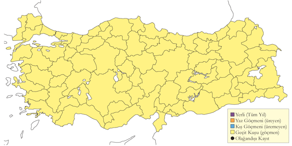
Üreme
Yuvalama alanı: Bilinmemektedir; ancak bataklık ve çayırlık alanlarda öten erkeklerin gözlemlenmesi, bazı bölgelerde ürediğine işaret edebilir.
Yuvası: Bilinmemektedir.
Yumurta sayısı: Bilinmemektedir.
Üreme dönemi: KAR Kızılırmak Deltası’nda, 7 Haziran 1992 ve 6 Mayıs 1992 tarihlerinde öten birer erkek duyulmuştur (Hustings & Dijk, 1994).
Alttürler ve Sınıflandırma
Monotipik bir türdür.
Sutavuğu
Gallinula chloropus, Common Moorhen
Yaygın ve nispeten çok sayıda bulunan yerli, yarı göçmen ve kış göçmenidir.
Çok küçük bataklıklar ve gölcükler de dâhil olmak üzere çeşitli sulakalan habitatlarında görülür. Bazı alanlarda çok sayıdadır. Kocaçay Deltası’nda 1993’te üreyen popülasyonun 400-500 çift olduğu tahmin edilmektedir (Ertan, 1996). Kızılırmak Deltası’nda ise 1992 yılında 200-250 çift olarak tahmin edilmiştir (Hustings & Dijk, 1994).
Kışın göç alır; özellikle Batı ve Orta Anadolu’nun kıyısal bölgelerinde yüksek sayılarda bulunur. Marmara Bölgesi’nde, en fazla Meriç Deltası’nda kaydedilen 40 birey olmasına rağmen sayıları genellikle düşüktür. Ege ve Akdeniz’de de Çorak’ta kaydedilen 62 bireye rağmen sayılar düşük kalmaktadır. İç Anadolu’da yaygındır; ancak, Nisan 2002’de Mogan Gölü’nde görülen 200 birey dışında, genelde düşük sayılarda bulunur. Karadeniz Bölgesi’nde Kızılırmak Deltası’nda kışları oldukça düşük sayılarda gözlenir. Doğu ve Güneydoğu Anadolu’da ise genellikle çok küçük sayılarda görülmekle birlikte, Eylül 2004’te Birecik’in güneyindeki Karkamış Barajı’nda yaklaşık 400 birey kaydedilmiş olup bu bölge düzenli olarak oldukça yüksek sayılarda bireye ev sahipliği yapmaktadır.
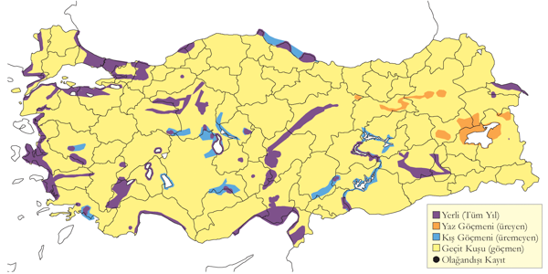
Üreme
Yuvalama alanı: Göl ve gölcüklerdeki sık bitki örtüsü, sazlık içeren suyolları, sazlıklar ve su aynaları barındıran bataklıklarda yuvalar. Çukurova’da kanallar, akarsu ve göl kenarları gibi tatlı su alanlarında ürediği kaydedilmiştir (Have et al., 1988).
Yuvası: Genellikle su üzerine veya suya yakın yapar; kamışlar ve diğer sucul bitkiler arasına iyi gizlenmiş bir şekildedir. Birecik’te çakıllı bir gölcükte bulunan yuva, bel seviyesinde bir suda uzun kamışların arasına gizlenmiştir. Yuvanın tabanı ölü kamış yapraklarından yapılmış, zarif bir kap şeklindedir.
Yumurta sayısı: Türkiye’de gözlenen yumurta sayısı 7 (2 yuvada), 11 (1 yuvada).
Üreme dönemi: EGE 26 Mayıs 2004’te Büyük Menderes Deltası’nda içinde 3 yumurta ve birkaç yeni yumurtadan çıkmış yavru bulunan bir yuva gözlenmiş olup, yumurtlama tarihinin nisan sonu/mayıs başı olduğunu göstermektedir. MAR 25 Nisan 2003’te Uluabat Gölü’nde çoğu erişkin henüz yuvalamaya başlamamışken, 2 Haziran 2006’da içinde 11 yumurta olan bir yuva görülmüştür. Manyas Gölü’nde 1966’da ilk yavru 30 Haziran’da kaydedilmiştir. KAR Abant Gölü’nde 6-13 Temmuz 1975’te kaydedilen bir erişkin ve yaklaşık 10 günlük en az 5 yavrusu, yumurtlamanın haziran başında olduğunu göstermektedir. Kızılırmak Deltası’nda Temmuz 1971’de pek çok yuva (Dijksen & Kasparek, 1985) ve 26 Mayıs 1992’de bir yuva görülmüştür (Hustings & Dijk, 1994). Aynı yerde 7 Haziran 2006’da yeni yumurtadan çıkmış bir yavru gözlenmiştir. AKD 10 Mayıs 1987’de Çukurova’da görülen yavru, en erken yumurtlama tarihinin nisan başı olduğunu işaret etmektedir. 20 Mayıs 1999’da Aydıncık’ta bir çift ve 2 yavrusu kaydedilmiştir. İÇA 5 Temmuz 1986’da Hotamış’ta bir aile grubu ve 1991’de yaklaşık 30 çiftin yuva yaptığı belirlenmiştir (Kirwan, 1993). 15 Ağustos 1968’de Mogan Gölü’nde, 3 Ağustos 1971’de Akşehir Gölü’nde ve 3 Ağustos 1983’te Seyfe Gölü’nde yavrular gözlenmiştir (Husband & Kasparek, 1984). Bu gözlemler, başka yerlerde olduğu gibi yılda en az 2 üreme yaptığını göstermektedir.
Alttürler ve Sınıflandırma
Monotipik bir türdür.
Sakarmeke
Fulica atra, Eurasian Coot
Yaygın olarak çok sayıda bulunan bir yerli ve kış konuğudur.
Sazlık ve su kenarı bitki örtüsüne sahip göller ile su aynalarına sahip bataklıklarda ürer. Kızılırmak Deltası’ndaki üreyen popülasyon 500-1000 çift arasındadır. İç Anadolu’daki pek çok lokalitede üreme dönemi boyunca boldur. Bölgedeki bazı yüksek sayılar şu şekildedir: Kulu Gölü’nde 600+, Yarma yakınlarında 300+, Ereğli’de 250 çift ve Gönenç Gölü’nde 200 çift. Ancak, üreyen popülasyon sulakalanların kurutulması nedeniyle bir dönem azalmıştır.
Üreme sonrası dağılım sırasında da ciddi sayılarda toplanır. Doğu Anadolu’da ise daha nadirdir; sayılar, sonbahar sürüleri hariç, genelde birkaç yüz ile sınırlıdır. Örneğin, Burdur Gölü’nde 1996 yazında 300.000 birey, Sodalı Göl’de Eylül 2004’te 10.000, Çıldır Gölü’nde Ağustos 1972’de 1.580 birey sayılmıştır.
Açık su yüzeylerine sahip sulakalanlarda kışlar. Güney Marmara’daki göllerde sakarmeke kışın düzenli olarak çok yüksek sayılarda görülür; Uluabat Gölü’nde 24 Ocak 1999’da 273.000 birey sayılmış olup maksimum sayı 320.000’e ulaşmıştır. Marmara Bölgesi’ndeki Meriç Deltası’nda ise Kasım 1970’te 81.400 birey kaydedilmiştir. Ege Bölgesi’nde en yüksek yoğunluk, 1996 yılında 68.500’den fazla bireyin sayıldığı Bafa Gölü’nde kaydedilmiştir. Yakındaki Büyük Menderes Deltası’nda ise kışın düzenli olarak 12.000’in üzerinde birey bulunmakta olup maksimum sayı Ocak 1999’da 32.535 olarak kaydedilmiştir. Göller Bölgesi’nde en yüksek kış sayımı, Ocak 1995’te Burdur Gölü’nde 138.925 birey olarak kaydedilmiş olup, göç döneminde ise 300.000 birey gözlenmiştir. Karamık Bataklığı’nda ise 95.000 birey sayılmıştır. Akdeniz Bölgesi’nde yaygın olan tür, sayımlarda 20.000’in üzerinde bireyin bulunduğu birkaç alanda görülmektedir; örneğin, Akyatan Gölü’nde Ocak 1970’te 80.000 ve Ocak 1971’de 112.640 birey, Göksu Deltası’nda ise Ocak 1971’de 54.350 birey kaydedilmiştir. Ancak bu alanlardaki birey sayılarında belirgin bir azalma gözlenmiştir (Magnin & Yarar, 1997; Heath & Evans, 2000). İç Anadolu Bölgesi’nde Hirfanlı Barajı’nda yüksek sayılarda gözlenir. Kızılırmak Deltası’nda kış aylarında daha yüksek sayılarda bulunur ve Ocak 2005’te 57.186 birey sayılmıştır. Doğu Anadolu’da yapılan barajlar yeni toplanma alanları oluşturmuş; en yüksek sayıda, 20 Ocak 2006’da Karakaya Barajı’nda 50.000 birey 16 Ocak 2005’te Karakaya Barajı’nda 110.131 birey sayılmıştır (Çağlayan et al., 2005). 1990-2010 arasında kışlayan nüfus artarak 400.000-1.000.000 birey arasında kaydedilmiştir.
Buna karşılık, İç Anadolu’daki bazı alanlarda sayılar düşüş göstermiştir. Orta Anadolu’da eski Hotamış Bataklığı’nda Ocak 1970’te 28.464 birey ve Seyfe Gölü’nde aynı tarihte 134.500 birey kaydedilmiş olmasına rağmen, bu alanlardaki sayılar zamanla büyük ölçüde azalmıştır.
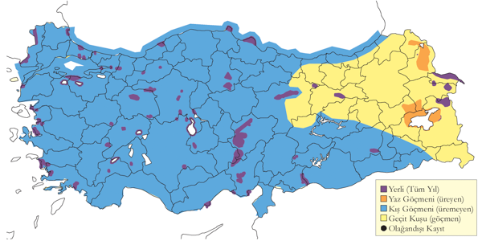
Üreme
Yuvalama alanı: Sazlıklarda yuvalar.
Yuvası: Yuvasını sazlıklar arasında su üzerine yapar. Yuva ölü yapraklar ve sucul bitki saplarından yapılmış dayanıklı bir kap şeklindedir.
Yumurta sayısı: Türkiye’de gözlenen yumurta sayısı 7-9 (3 yuvada). Ancak sınırlı verilere göre, bilinenin aksine daha az yumurta yapma eğilimindedir (başka yerlerde 6-9). Yavru sayısı 9’dan fazlası gözlenmiş olsa da, genelde 2-5 arasıdır.
Üreme dönemi: KAR Kızılırmak Deltası’nda, 1992’de nisan ayında sürü büyüklüklerinin azaldığı ve nisanın son 10 gününde çiftlerin gözlendiği kaydedilmiştir. İlk yuva 1 Mayıs’ta, ikinci yuva 20 Mayıs’ta ve çoğu yuva mayıs sonunda gözlenmiştir. 27 Mayıs’ta çiftler yeni yavrularıyla görülmüştür; çoğu yuva Scirpus öbekleri içindedir (Hustings & Dijk, 1994). EGE 13 Mayıs 1899’da içinde yumurta olan 20 yuva kaydedilmiş olup, birinde 9 yumurta görülmüştür (Selous, 1900). Başka bir yuva da 13 Mayıs 1950’de kaydedilmiştir (McNeile, 1950, 1951, 1954, 1967, 1968, 1970, 1972, 1973). 4 Haziran 1972’de yavrularıyla birlikte gözlenen erişkinlere göre yumurtlama tarihinin mayıs başında olduğu belirlenmiştir. MAR 19 Haziran 1973’te kaydedilen erişkinlerin 3/4 boyutunda iki yavru, yumurtlamanın mayıs başında gerçekleştiğini göstermektedir. 2 Mayıs 1966’da Manyas Gölü’nde 7 yumurtalı bir yuva kaydedilmiştir. İÇA 18-25 Mayıs tarihleri arasında 8 yumurta içeren 8 yuva farklı alanlarda kaydedilmiştir. Bölgeden pek çok yavru kaydı mevcut olup, çoğunlukla 1 Haziran’dadır. Mogan Gölü’nde 11 Mayıs 1970’te 3 günlük bir yavru gözlenmiştir. Sultansazlığı’nda 14 Mayıs 2004’te yeni yumurtadan çıkmış bir yavru, yumurtlamanın nisan ortasında gerçekleştiğini göstermektedir. AKD Göksu Deltası’nda 18-19 Temmuz 1972’de çok sayıda büyük yavru gözlenmiştir. DOA En erken yavru kaydı 27 Mayıs 1969’da Erçek Gölü’nden olup, 18 Ağustos 1972’de Tatvan’da kaydedilen küçük bir yavru, muhtemelen ikinci bir üremeyi işaret etmektedir (Kasparek & Ven, 1983).
Alttürler ve Sınıflandırma
Türkiye’de nominat alttürü bulunur.
Gri Başlı Sazhorozu
Porphyrio poliocephalus, Grey-headed Swamphen
Lokal olarak çok sayıda olabilen yerli bir türdür.
Türkiye’de iki popülasyonu bulunmaktadır. Doğu Akdeniz’de Göksu Deltası, Çukurova ve eski Amik Gölü’nde yerli ve üreyen bir tür olarak bilinir. 1972’de Göksu Deltası’nda yaklaşık 70 çift, Çukurova’da Akyatan Gölü merkezli olmak üzere Tarsus Deltası’ndaki Aynaz Gölü drenajlarında yaklaşık 20 çiftin ürediği tahmin edilmektedir (bu alandan en geç 1982’ye kadar kayıtlar bulunmaktadır). Amik Gölü popülasyonu ise 1962’deki son kayıttan sonra yok olmuştur (Kasparek, Bilgin & Akin, 1989). Son dönemlerdeki kurutma çalışmaları Çukurova popülasyonunu risk altına sokmuştur. 1990’ların sonlarından itibaren Fırat boyunca Birecik’te görülmeye başlanmış ve burada yerleşik hale gelmiştir.
1990’ların sonunda Kızılırmak Deltası’nda yeni popülasyonlar bulunmuş ve yerleşmiştir (Balmer & Betton, 2004b). Kızılırmak Deltası popülasyonu, yöre halkının bildirimlerine göre 1990’ların sonlarında ilk kez kaydedilmekle birlikte, yaklaşık 5 yıl öncesinde de var olduğu belirtilmiştir(Kasparek, 1992). Bu popülasyon hızla çoğalmış; Aralık 2005 ve Ekim 2007’de yaklaşık 1800 birey pirinç tarlalarında sayılmıştır.
Türkiye’nin diğer bölgelerinde, nadiren üreme durumunu gösteren birkaç kayıt mevcuttur. Akşehir Gölü (Beaman, 1986), Sultansazlığı (Kasparek, 1985; Kirwan & Martins, 1994), Mogan Gölü ve Adıyaman’da (Kasparek et al., 1989), ayrıca 1 Haziran 2002’de Ahlat Bataklıkları’nda bir erişkin, Karakaya Barajı’nda bir erişkin, 27 Kasım 2005’te Malatya’da ve 8 Eylül 2006’da Iğdır’da bir birey kaydedilmiştir (Dutch Birding 28:376). Son gözlem, düzenli gözlenen bu alandaki mevcut tek kayıttır. Bununla birlikte, Manyas Gölü’nde eski tarihlerde bulunduğu iddiası (Kiziroğlu & Kiziroğlu, 1987) dayanıksız görünmektedir. İstanbul’da ise 15 Temmuz 1893’te kaydedilmiştir (Mathey-Dupraz, 1920–24; Rigler, 1852).
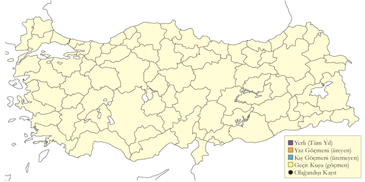
Üreme
Yuvalama alanı: Göksu Deltası’nda Akgöl’ün yanı başındaki sığ gölcüklerde yetişen çalı ve sazlıklar içinde yuva yapar.
Yuvası: Sucul bitkilerin dalları ve yapraklarından yapılmış, suyun üzerinde büyük bir platform ve derin olmayan bir kap şeklindedir. Yuva etrafındaki uzun çalılar, kuluçkadaki kuşu yukarıdan örtecek şekilde bükülmüştür. Yuva, erişkinlerin çamurlu sudan tırmanması sonucu birkaç gün içinde daha belirgin hale gelir ve çoğu yuva suda büyüyen çalı kümelerinin üzerindedir. Ancak kaydedilen bir yuva, çalılarla çevrili otlardan oluşan küçük bir adanın üzerindeki kuru zeminde bulunmuş olup, yoğun bitki örtüsüyle çamurla çevrili 2 metre uzunluğunda bir tünel bağlantısı vardır; bu tünel su seviyesinden 1,3 metre yükseklikte olup tamamen gizlenmiştir.
Yumurta sayısı: Türkiye’de gözlenen yumurta sayısı 3 (2 yuvada), 4 (2 yuvada), 5 (4 yuvada) ve 6 (1 yuvada) olup daha düşük yumurta sayılarının tamamlanmamış kuluçkalar olduğu düşünülmektedir. Çoğunlukla yuvayı terk etmiş 1 veya 2 yavru gözlenmiştir (15 yuvada). Kuluçka sırasında görülen yavru sayısı 3 (5 yuvada) ve 4 (3 yuvada) olarak kaydedilmiştir.
Üreme dönemi: Nisan sonunda yumurta koyar, yavrular mayıs ve haziran ayında gözlenir. AKD Göksu Deltası’nda 21-23 Mayıs 1993’te gözlenen 8 kuluçkanın 4’ü tamamlanamamış, ancak sonradan yumurtlama olmuştur. Bu kayıtlarda 24 Mayıs 1993’te görülen bir yavru, yumurtlamanın 25 Nisan civarında başladığını göstermektedir. Aynı alanda 26 Mayıs 1998’de 4 yumurtalı bir yuva ve 17 Haziran 1992’de içinde 3 yavru olan gecikmiş bir yuva kaydedilmiştir. Yavrular çoğunlukla mayıs ortası ve haziran aylarında gözlenir; en erken tarih 3 Mayıs 1989 olup, yumurtlamanın nisan başlarında olduğunu işaret etmektedir. Ağustos sonundaki gözlemler ise yeni uçmaya başlamış yavrulara aittir. Çukurova’da 8 Mayıs 1990’da bir erişkin ve yavruları, aynı alanda 9 Mayıs 1990’da en az 9 erişkin ve 10 yavru gözlenmiş olup, 7 yuva alanı belirlenmiştir (Ovaa & Vos, 1990). Amik Gölü’nde 22 Mayıs 1933’te sazlık içinde 5 yavrulu bir yuva gözlenmiş ve yeni çıkmış bir yavru yakalanmıştır (Meinertzhagen, 1935). Ayrıca 5 yumurta, 6 Haziran 1929’da toplanmıştır (Kasparek et al., 1989). KAR Kızılırmak Deltası’nda 27 Haziran 1999’da iyi gelişmiş 2 yavru ile bir erişkin gözlenmiştir.
Alttürler ve Sınıflandırma
Türkiye’de iki farklı alttür bulunur. Doğu Akdeniz ve çevresinde daha uzun süredir varlığını sürdüren alttür, Doğu Akdeniz’den Kuzeybatı Hindistan’a kadar yayılış gösteren seistanicus alttürüdür. Bazı yazarlar, Hindistan’da bulunan poliocephalus alttürünü seistanicus ile eş anlamlı olarak değerlendirmiştir. (Aharoni, 1930), daha önce örnekleri toplanmış olan seistanicus’un Amik Gölü’nde ürediğini ileri sürmektedir (Kumerloeve, 1963). Ayrıca, Türkiye’deki kuşların morfolojik özelliklerinin, diğer seistanicus popülasyonlarına caspius alttüründen daha yakın olduğu düşünülmektedir (Kasparek et al., 1989). 2000’li yılların başında Kızılırmak Deltası’na göç ederek yerleşen popülasyon ise caspius alttürüne aittir. İlginç bir şekilde, 15 Temmuz 1893’te İstanbul yakınlarında gözlemlenen bir kuş, Batı Akdeniz’in porphyrio taksonuna atfedilmiştir (Mathey-Dupraz, 1920–24).
Küçük Sazhorozu
Porphyrio alleni, Allen’s Gallinule
Rastlantısal konuktur.
Türkiye’de tek kaydı bulunmaktadır; 26-30 Nisan 2013 tarihleri arasında Mogan Gölü’nde erişkin bir birey gözlenmiştir. Batı Palearktik bölgesinde anakarada 13’ten fazla ülkede ve Azorlar, Madeira ile Kanarya Adaları’nda kayıtları bulunmaktadır.
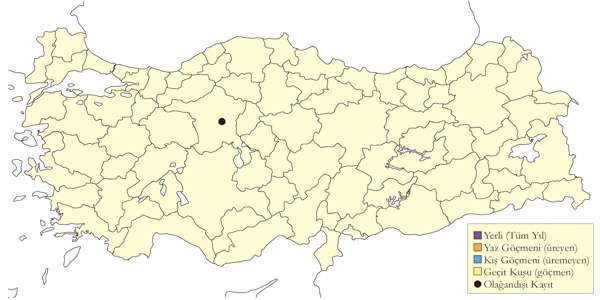
Üreme
Türkiye’de yuvalamaz. Esas yayılış alanı Sahra Altı Afrika’dır.
Alttürler ve Sınıflandırma
Monotipik bir türdür.
Çizgili Yelve
Aenigmatolimnas marginalis, Striped Crake
Raslantısal türdür.
11 Aralık 2020’de Bodrum’da bir birey, E. Durmuş tarafından ölü olarak bulunmuştur.
Üreme
Türkiye’de yuvalamaz. Asıl yayılış alanı Doğu ve Güney Afrika’dır.
Alttürler ve Sınıflandırma
Monotipik bir türdür.
Bataklık Suyelvesi
Zapornia parva, Little Crake
Seyrek ve lokal yaz konuğu ve yaygın ve çok sayıda bulunan geçit türüdür.
Yakın zamanlarda Akdeniz’de ürediği kanıtlanmış olup muhtemelen İç Anadolu, Karadeniz ve Doğu Anadolu’da da aynı durum söz konusudur. Muhtemelen üç suyelvesi türü arasında en yaygın üreyen türdür. Göç sırasında pek çok alanda öttüğü için ürediği yorumlanabilir. Mart ortasında gelir ve nisan-mayıs döneminde gözlenir; Orta Avrupa’da mayıs başında yumurtlar (Cramp & Simmons, 1980). Geç ilkbahar kayıtları çoğunlukla muhtemel üremeyi gösterir; ancak haziranın ilk haftasındaki geç tarihli kayıtlar, üreme sezonunun daha geç olduğu kuzey ve doğudaki alanlara göç eden bireyler olma olasılığını da taşır.
Mevcut tahminlerden daha yaygın bir geçiş türüdür ve göçü, benekli suyelvesine kıyasla Türkiye’de daha geniş bir alana yayılmıştır. İlkbahar sayıları genellikle düşük olmakla birlikte, bazı önemli kayıtlar dikkat çekmektedir: 19 Nisan 1996’da Kozanlı Saz Gölü’nde 42 birey, 22 Nisan 1996’da Kuzeydoğu Anadolu’da 39 birey (Kirwan & Martins, 2000), Çukurova’da 25 Mart-15 Mayıs 1990 arasında 71 birey (Kivit, Nijmeijer & Ovaa, 1994), 1992 ilkbaharında Kızılırmak Deltası’nda 32 birey (Hustings & Dijk, 1994), ve 2002 Mart-Nisan döneminde Mogan Gölü’nde “düzinelerce” birey (Balmer & Betton, 2003a) kaydedilmiştir. Sonbahar göçünün başlangıcı belirsiz olmakla birlikte kesinlikle ağustostan öncedir; Akdeniz’de, Göksu Deltası’ndan temmuz ayında iki erken kayıt bulunmaktadır. Sonbaharda göç, eylül ve ekim aylarında yoğunlaşır ve ekim sonundan sonra nadiren görülür. En geç 14 Kasım’da Kızılırmak Deltası’nda kaydedilmiştir (Balmer & Murdoch, 2009). Sonbahardaki sayılar, ilkbahara göre daha düşüktür.
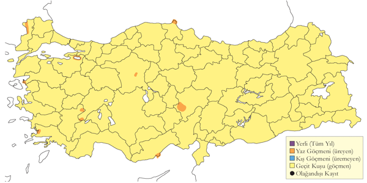
Üreme
Yuvalama alanı: Yuvalama ile ilgili tek kayıt, 23 Mayıs 1993’te Göksu Deltası’nda sazlık ve kındıralık alanlarda gözlenen üç boş yuvadır. Bu alanın yakınında, muhtemelen çift olan iki erişkin ve görünmeyen olası bir yavru, 2 gün önce heyecanlı hareketlerle gözlenmiştir.
Yuvası: Kofalardan (Juncus) yapılmış, derin olmayan bir kap şeklinde olup, sık bitki örtüsü içinde iyi gizlenmiştir ve su seviyesinden çok az yüksekte yer almaktadır. Yuva, sukılavuzu yuvasından daha küçük boyutludur.
Yumurta sayısı: Bilinmemektedir.
Üreme dönemi: Göksu Deltası’nda mart ve nisan aylarının sonlarında öten erkek bireyler ve birlikte gözlenen (muhtemel çift) erkek ve dişi bireyler kaydedilmiştir. İÇA 25 Nisan 1974 ve 1 Mayıs 1974’te Mogan Gölü’nde birer çift ve 2 Mayıs 1992’de Çöl Gölü’nde 2 dişi ve 2 erkek kaydedilmiştir (Karauz Kiraç, 1993). KAR Kızılırmak Deltası’nda 1992’de öten birkaç erkek ve muhtemel üreme kaydı (0-5 çift) bulunmaktadır (Hustings & Dijk, 1994). DOA Çenge Gölü’nde, 20 Mayıs 1993’te ve 8-9 Haziran 1997’de öten iki erkek kaydedilmiş olup, burada üreyen bir popülasyonun varlığını düşündürmektedir (Kirwan & Martins, 2000).
Alttürler ve Sınıflandırma
Monotipik bir türdür.
Küçük Suyelvesi
Zaporia pusilla, Baillon’s Crake
Lokal olarak az sayıda yaz konuğu, yaygın ve az sayıda bulunan geçit türüdür.
Sadece Manyas Gölü ve Kırklareli İğneada’da ürediği tespit edilmesine rağmen, bazı potansiyel üreme alanlarında yazın kaydedilmiştir. Gerçek durumunu belirlemek, üreme ile göç kayıtlarının karışmasından dolayı zordur. Orta Avrupa’da yumurtlama mayıs ayında başladığından, ilkbahar sonu kayıtları olası üremeyi gösterebilir; çoğu, kuzeye göçleri sırasında öter. Yaz kayıtları ise haziran sonu ve temmuz başında olabilir. Başka bölgelerde öten erkekler bataklık ve çayırlık alanlarda kaydedilmiştir ancak yuvalama kanıtlanmamıştır.
Belirgin olarak yaygın bir geçiş türü olup üç suyelvesi arasında en nadir görülenidir; batı bölgelerde ise nispeten sıktır ve büyük olasılıkla tahmin edilenden daha yaygındır. En erken kayıt, 20 Şubat 2011’de Birecik’in güneyinde görülmüştür. Mart ortasında gözlenmeye başlar ve öten erkekler 19-28 Mart arasında çeşitli bölgelerde kaydedilir. Nisan ve mayısta daha yaygınlaşır. Sonbahar göçü ağustos-ekim arasında, özellikle eylülde yoğunlaşır. Ayrıca iki kış kaydı bulunmaktadır: 15 Aralık 1969’da Manyas Gölü’nde (OST, 1975) ve 13 Ocak 2001’de Kızılırmak Deltası’nda birer birey gözlenmiştir.
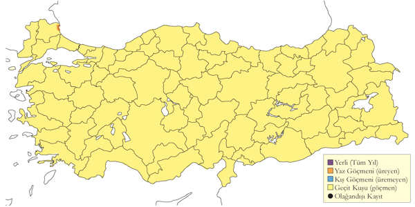
Üreme
Yuvalama alanı: Manyas Gölü’ndeki yuva, su seviyesinden çok az yüksekte, yaklaşık 50 cm boyundaki kındıra veya saz (muhtemelen Scirpus) kümeleri arasında bulunur.
Yuvası: Kındıra saplarıyla çevrili kap şeklinde bir yapıdadır. Yuvada zeytin yeşili zeminde kahverengi lekeli 3 yumurta ve 4 küçük siyah yavru gözlenmiştir. Erişkinler, yuvanın yakınında uyarı çığlıkları atmıştır.
Yumurta sayısı: 3-4 yumurta koyar. Bir yuvada 3 yumurta, başka bir sahada 4 yavru gözlenmiştir.
Üreme dönemi: Yavruların durumuna göre yumurtlama yaklaşık 18-19 Temmuz’da başlamış olup, bu geç tarih ikinci bir üreme olduğunu düşündürmektedir. Yöre halkı Beaudoin’e, pirinç tarlalarında bu türün yuvalarını sık sık bulduklarını belirtmiştir. MAR Türkiye’deki ilk üreme kaydı, 9 Ağustos 1965’te Manyas Gölü yakınındaki bir pirinç tarlasında yapılmıştır (Beaudoin, 1967). 31 Temmuz 2009’da İğneada Mert Gölü’nde genç bir bireyi fotoğraflamıştır(Özkan, 2010). İÇA 23 Mayıs 1992’de Eşmekaya’daki sığ su bulunan bir bataklıkta bir erişkinin heyecanlı hareketleri gözlenmiş olup, alan tür için uygun üreme habitatıdır.
Alttürler ve Sınıflandırma
Muhtemelen Türkiye’dekilerin hepsi intermedia’dır. nominat alttür ile intermedia’nın yayılış alanlarının sınırlarında iki alttür bir ölçüde karışır ve ayırt edilmeleri zorlaşır (Cramp & Simmons, 1980; Roselaar, 1995).
Telli Turna
Anthropoides virgo, Demoiselle Crane
Üreyen nüfus yok olmuştur, lokal olarak az sayıda bulunan bir geçit türüdür.
Yakın zamana kadar bilinen üreme alanları Murat Nehri Vadisi ve çevresindeki Patnos, Malazgirt ve Muş Ovası’dır. En çok kayıt, Malazgirt ile Bulanık arasındaki Bulanık Ovası’ndan olup burada en fazla 22 birey sayılmıştır. Doğubayazıt’taki Saz Gölü eski bir üreme alanı olabileceği gibi yeni keşfedilmiş de olabilir. Üreme dönemi nisan ortasından ağustos ortasına kadar sürmektedir. Ancak, 2013 yılında bu alanlarda artık üremediği teyit edilmiş ve Türkiye’de üreyen nüfusun soyunun tükendiği düşünülmüştür(Boyla, Sinav & Dizdaroğlu, 2018).
2021-2023 yılları arasında Amasya Suluova’daki bir gölette bir çift yuvalamıştır. Ancak buradaki üremenin, göç rotasında kalmış ve düzensiz bir üreme olduğu düşünülmektedir.
Türkiye’de ürediği ilk kez Sandwith (1856) ve Dresser (1891) tarafından, yakın zamanda üremediği bilinen Erzurum çevresinde yapılan gözlemlerle kayda geçirilmiştir. 1967’ye kadar başka bir üreme kaydı bulunmamaktadır. İlk popülasyonun 23-30 çift olduğu tahmin edilirken (Kasparek, 1988), daha güncel bir tahminde bu sayının sadece 10-20 çift arasında olduğu öngörülmüştür (Kılıç, 2004).
İki ana göç yolu vardır. Birincisi, Murat Vadisi ve Van Gölü havzasından geçerken, diğer rota Kastamonu, Ankara ve Tuz Gölü hattı üzerinden ilerler. Yukarı Murat Vadisi’nde 15 Nisan 1986’da 15 birey ve Nisan 1981’de 22 bireylik göçmen sürüler kaydedilmiştir (Kasparek, 1988). Van Gölü’nün güneyi, Yukarı Aras Vadisi’nin kuzeyi ve son yıllarda daha kuzeydeki küçük alanlarda göç ettikleri düzenli olarak gözlenmiştir. İlkbahar göçü 24 Mart-23 Mayıs, sonbahar göçü ise 2 Eylül-14 Ekim arasına denk gelir. İlkbahar göçünde İç Anadolu’da yoğunlaşır ve Kulu Gölü, Mogan Gölü ve Sultansazlığı’nda düzenli olarak gözlenir; 21 Mart 2009’da Mogan Gölü’nde gözlenen 41 birey, son yıllardaki en kalabalık sürüdür.
Diğer bölgelerde nadirdir; Marmara Denizi’ne kadar olan bölgelerde ve 19. yüzyılda Trakya’da daha yaygın olarak kaydedilmiştir. Alleon, İstanbul çevresinde türün ara sıra gözlendiğini belirtmiş olup, burada toplam 36 göç kaydı mevcuttur ve bunlar genellikle 10 bireyi aşmayan küçük sürülerdir. İstisnai olarak, 1977’nin eylül sonlarında İstanbul Boğazı’nda güneye uçan 38 birey kaydedilmiştir. Tek kış kaydı ise Göksu Deltası’nda Turna ile birlikte 9 Şubat 1997’de görülen 2 bireydir (Vaassen, 1998).
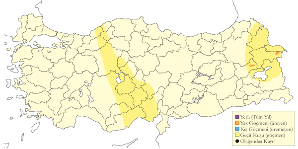
Üreme
Suya yakın geniş ve açık araziler, çayırlar, bataklıklar ve nehirlerdeki çakıl adaları üzerinde yuva yapar. Yuvası zeminde hafifçe kazılmış otlak veya çıplak alanlardadır. Türkiye’de gözlenen yumurta sayısı 1 (1 yuvada), 2 (5 yuvada). Yavru sayısı: 2 (2 yuvada), 1 (1 yuvada). DOA. 30 Nisan 1981’de Ağrı’nın batısında çiftleşen bireyler görülmüştür. 11-13 Haziran 1987’de Balatos yakınlarında, 30 Haziran 1988’de Ağrı ile Horasan arasında kuluçkada bireyler görülmüştür. 4 Haziran 1971’de Doğubayazıt’ın yakınlarındaki bataklıktaki küçük bir adada içinde 2 yumurta olan bir yuva kaydedilmiştir. 20 Mayıs 1975’de Söylemez yakınlarındaki ırmaktaki kum adasının üzerinde içinde 2 yumurta olan bir yuva görülmüştür. Başta Bulanık civarı olmak üzere haziran ve temmuz arasında birkaç yuva kaydı vardır. En erken 1 Temmuz 1988 ve 1 Haziran 1989’dadır ve bu tarihler yumurtlamanın mayıs başında olduğunu göstermektedir. Tring Doğa Tarihi Müzesi’nde 20 Mayıs 1864’de toplanan 1, 22 Mayıs 1864 ’de 1, 10 Mayıs 1865 ’de 2 ve 15 Mayıs 1865’de 1 olmak üzere toplam 8 yumurta bulunmaktadır.
Alttürler ve Sınıflandırma
Monotipik bir türdür. Tür, geleneksel olarak Anthropoides cinsi altında değerlendirilmiştir.
Ak Turna
Leucogeranus leucogeranus, Siberian Crane
Rastlantısal konuktur.
21 Mayıs 1985’te, Bulanık’ın batısında muhtemelen Turna ve Ak Turna melezi olduğu düşünülen bir kuş gözlenmiştir (Davidson, 1985), bu bireyin doğal bir melez değil, Rusya’da yürütülen bir koruma programında üremiş bir melez olduğu düşünülmüştür (Martins, 1989). Ardından ikinci bir birey Haziran 1999 başında, Sinop Gerze’de bir tavuk çiftliğinde bir birey bulunmuştur. Bu kuşun, Ağustos 1996’da Rusya’daki Oka Biyosfer Koruma Alanı’ndan kaçıp bir turna sürüsüne katılarak güneye göç ettiği anlaşılmış ve Türkiye’de görülmesi bu şekilde açıklanmıştır (Bradshaw & Kirwan, 2000).
Bu yüzyılın başında İran’da Hazar Denizi kıyılarında 7-11 birey, Kuzey Hindistan’da 2 birey ve 1996’da Volga Deltası’nda 13 birey kaydedilmiştir. Kuzeydeki üreme alanında ise popülasyonun sekiz çift olduğu tahmin edilmektedir (Snow & Perrins, 1998; International, 2001). Uydu telemetrisiyle yapılan gözlemler, üreme alanlarının Ob Nehri havzasında, Kunovat Nehri havzasının 650 km güneyinde olduğunu ve kuşların genellikle Hazar Denizi’nin batı kıyıları boyunca göç ettiklerini göstermektedir (Kanai et al., 2002). Türün, Çin’de kışlayan doğu popülasyonu ve Hazar Denizi’nin güneyindeki İran Mazanderan’da kışlayan, 2023 itibarıyla tek bir bireyden oluşan batı popülasyonu olmak üzere iki popülasyonu bulunmaktadır. Batı popülasyonu günümüzde yok olma eşiğinde olup, 2023 itibarıyla İran popülasyonu “Omit” (Umut) isimli tek bir bireye indirgenmiştir.
Yirminci yüzyılda muhtemelen düzenli olarak bulunduğu düşünülür. İlk geçerli kayıtlara göre (Kasparek, 1987), Nisan 1879’da Ankara çevresinde 100’den fazla kuş gözlenmiş, leyleğe benzer göründükleri ve gözlemcilerin kuşlara çok yaklaşabildiği belirtilmiştir (Danford, 1880). Eylül 1854’te Erzurum Ovası’nda biri 4-5, diğeri 20 bireylik iki grup gözlenmiş ve bir birey vurularak örnek olarak alınmıştır (Sandwith, 1856); ancak bu örnek günümüze ulaşmamıştır. Sandwith, tür tayininde telli turnayı elemesine rağmen, bu kuşların aslında Turna olabileceği düşünülmektedir. Bu şüphe doğrultusunda (Kasparek, 1987) tarafından tarihi kayıtların geçerli sayılması tartışılmış ve bu kayıtların Türkiye listesinden çıkarılması önerilmiştir (Harrap, 1987). Sonrasında, tarihi kayıtların değerlendirilmesinde modern standartların kullanılmasını eleştiren bir görüş de ortaya konulmuştur (Walters, 1988). 19 yüzyıldaki kayıtlara göre, türün batı popülasyonları daha yaygındı ve Türkiye’deki tüm kayıtlar bilinen göç dönemleriyle uyumludur (International, 2001).
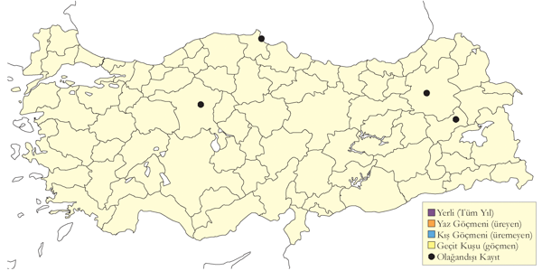
Üreme
Türkiye’de yuvalamaz; üreme alanı Sibirya’dadır.
Alttürler ve Sınıflandırma
Monotipik bir türdür.
Turna
Grus grus, Common Crane
Lokal olarak az sayıda yuvalayan bir yaz konuğu, yaygın olarak nispeten çok sayıda bulunan geçit türü ve lokal olarak bulunan kış konuğudur.
Doğu Anadolu’da, özellikle Sivas ve Muş’taki küçük göllerde üreme popülasyonunun çoğunluğu bulunur (Akarsu, 2013). Güneydoğu Anadolu’da Adıyaman Gölbaşı’nda üremeye uygun habitatlarda haziran ayında kaydedilmiştir (Welch, 2004). Karadeniz’de Kızılırmak Deltası’nda üreyen yaklaşık 50 çift bulunduğu tahmin edilmekte olup, kış aylarında da bu bölgede gözlenmektedir (Heath & Evans, 2000). Daha önce Yeniçağa Gölü’nde de ürediği bilinen bu tür, burada üreme mevsiminde 40’tan fazla turna gözlemlenmiştir; ancak günümüzde bu alanın bu büyüklükte bir popülasyonu barındırması mümkün görünmemektedir. Doğu Anadolu’da üreme döneminde birkaç alanda düşük sayılarda olsa da oldukça yaygındır, ancak habitat kaybı ve tahribatı nedeniyle lokal seviyede azalma belirtileri vardır. Bu bölgede üreme döneminde Eleşkirt ve Ağrı arasında 40’ın üzerinde bireyin görüldüğü Mayıs 1970 kaydı, en yüksek sayı olarak kaydedilmiştir.
İç Anadolu’da birkaç noktada üremiş olup, popülasyonu sulakalanların kurutulması sonucu belirgin şekilde azalmaktadır. Mayıs 1970’de Kurbağa Gölü’nde maksimum 50 çift, Mayıs 1972’de ise 38 çift kaydedilmiştir.
Göç sırasında ana rota, Orta Karadeniz kıyılarından Çukurova’ya uzanan hat üzerindedir. İç Anadolu’da en büyük yoğunluk Tuz Gölü çevresinde olup, burada 1970 yılında maksimum 4186 ve Kasım 1971’de 4023 birey kaydedilmiştir; ancak günümüzde bu sayılar daha düşüktür. Ayrıca, Sultansazlığı’nda 1994 sonbaharında 1200’ün üzerinde, 1993 yılında Ereğli Sazlığı’nda ise 1000 birey kaydedilmiştir. Diğer bir göç rotası Doğu Anadolu’dan geçer. Ağrı yakınlarında 80 (Eylül 1970), Horasan yakınlarında 165 (Kasım 1970) ve Aşvan’da 224 birey (Ağustos 1971) sayılmıştır.
Ana göç hattı dışında, eskiden aktif olan göç rotalarından bugün çok az sayıda kuş geçmektedir. Marmara Bölgesi’nde özellikle sonbahar göçünde görülmekte olup, ilkbaharda ise daha düşük sayılardadır. İstanbul Boğazı’ndan uzak alanlarda, İstanbul ile Edirne arasında yapılan sayımlarda 18 Eylül 1973’te 200 birey ve 6 Ekim 1973’te 1,5 saat içinde Edirne’de güneye uçan 1078 birey kaydedilmiştir. İlkbahar başlarında (mart ortasından itibaren) ve sonbaharda (ağustos ortasından itibaren) düzenli olarak gözlenir; 15 Mart’ta kuzeye uçan 451 birey ve 21-30 Eylül arasında doğuya uçan 163 birey en yüksek sayılardandır, ancak günümüzdeki sayılar daha düşüktür. Boğaz geçişlerinin tarihsel dağılımı iyi bilinmemektedir. Ege ve Akdeniz Bölgeleri’nde uzun zamandır geçiş ve kış ziyaretçisi olarak bilinen tür (Gonzenbach, 1852), nadiren de olsa üreme dönemi boyunca da kaydedilmiştir. Acıgöl’de en yüksek olarak 12 Eylül 1961’de 800 birey (Kumerloeve, 1961) ve 1971 Kasım sonunda kışın 556 birey kaydedilmiş olup, genellikle düşük sayılarda gözlenmektedir.
Türkiye’deki kışlayan nüfusun %90’ından fazlası Çukurova’daki Akyatan Gölü ve Yumurtalık Lagünlerinde toplanır. Kasım ve aralık aylarında ortalama 10.000 civarında olan sayı, şubat ayında 5000 bireye düşer; şubat sonu ile birlikte ilkbahar göçünün başlamasıyla sayılar tekrar artar. Eskiden Orta Anadolu’da önemli sayılarda kışladığı bilinen tür, 1982 sonbaharında Batı ve Orta Anadolu’daki sulakalanlarda yapılan bir araştırmada 12.960 birey olarak sayılmıştır (Berk et al., 1986).
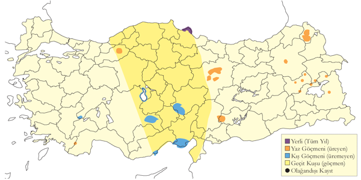
Üreme
Yuvalama alanı: Daha az rahatsız edilecekleri geniş ve sığ bataklıklar, göllere yakın sulak çayırlar, kındıra ve 60 cm’den uzun otların bulunduğu veya Yeniçağa Gölü gibi alçak kesimlerde dağınık sazlıkların yer aldığı alanlarda ürer.
Yuvası: Düzlenmiş bitki örtüsüyle kaplı, bitkisel materyali az olan dar ancak kuru bir tepecik üzerine, ebeveyni gizleyecek uzunluktaki bitkiler arasında yapılır. Türkiye’de kaydedilmemiş olsa da, daha derin sularda büyük bir bitki öbeğinin üzerine yuva yapabilir.
Yumurta sayısı: 1-3 arası değişmekte olup, ortalaması 1,9’dur. 1 (2 yuvada), 2 (5 yuvada) ve 3 (1 yuvada).
Yavru sayısı: Genelde 1 (24 yuvada) ve nadiren 2 (8 yuvada).
Üreme dönemi: İKAR Kızılırmak Deltası’nda temmuz ayında 11 kuluçka kaydedilmiştir (Dijksen & Kasparek, 1985). Aynı alanda 26 Mayıs 1992’de 7-10 günlük bir yavru gözlenmiş, bu da yumurtlamanın 15-20 Nisan’da başladığını göstermektedir; 5 Haziran’da ise iki yavru gözlenmiştir (Hustings & Dijk, 1994). Yeniçağa Gölü’nde, 2 Mayıs 1978’de kur davranışı ve çiftleşme, 25 Nisan 1962’de yumurtalı 4 yuva ve haziran ayında en erken 2’si olmak üzere 4 kuluçka kaydedilmiştir (Kılıç & Kasparek, 1987). AKD 10 Mayıs 1899’da Acıgöl’de içinde yumurta olan 5 yuva ve yeni yumurtadan çıkmış yavru gözlenmiştir (Selous, 1900). Aynı alanda 12 Mayıs 1974’te kur davranışı, 21 Nisan 1981’de yuvalar, 27 Haziran 1964’te 5 yavru ve 16 Temmuz 1986’da 1 yavru kaydedilmiştir (Dijksen & Kasparek, 1988). ÇA En erken kayıt, 11 Mayıs 1993’te Eşmekaya’dan bir erişkin ve yaklaşık 3 haftalık iki yavru olarak gözlenmiş olup, yumurtlamanın 21 Mart civarında olduğunu göstermektedir. 23 Mayıs 1992’de ve 11 Mayıs 1993’te Eşmekaya’da yeni çıkmış yavrular kaydedilmiştir; 14 Haziran 1973’te ise geç kuluçka gözlenmiştir (Pforr & Limbrunner, 1982). Mayıs sonu ile temmuz arasında farklı alanlarda yavrular kaydedilmiştir. 22-27 Mayıs 1972’de Sultansazlığı’nda 29 küçük yavru ve 38 çift gözlenmiştir (Kasparek, 1985). DOA 29 Mayıs 1969’da Bendimahi’de bir erişkin kuluçkada, 14 Mayıs 1970’de Fahril Gölü’nde 6 erişkin kuluçkada ve 24 Mayıs 1975’te Sarıkamış’ta içinde 3 yumurta olan bir yuva gözlenmiştir. 9 Haziran 1984’te Murat Nehri kenarında yaklaşık 3 haftalık iki yavru kaydedilmiştir. 27 Haziran 1989’da Bulanık’ta küçük bir yavru gözlenmiş olup, yumurtlamanın mayıs sonunda olduğunu göstermektedir.
Alttürler ve Sınıflandırma
Monotipik bir türdür. Eskiden Türkiye, Güney Kafkasya ve Kuzey Asya popülasyonlarını lilfordi olarak kabul edilmiştir (Roselaar, 1995). Ermenistan’da tanımlanan archibaldi alttürü, Türkiye’de en azından Doğu Anadolu’daki popülasyonu da içermektedir (Lyashenko, 2011). Ancak bu alttür henüz gerçek bir kabul görmemiştir.